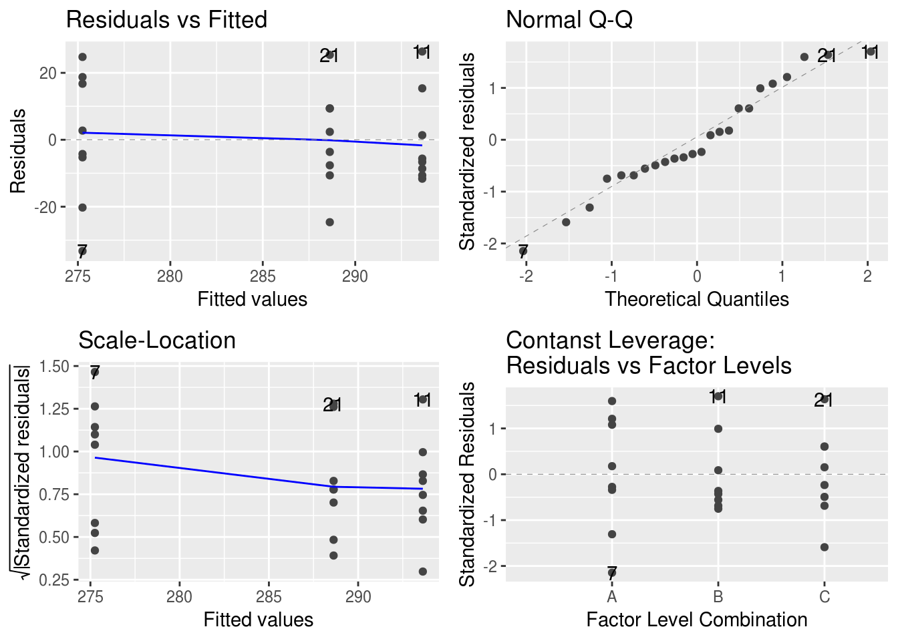

Capítulo 6 Problemas ANOVA Simple
Para analizar datos con ANOVA en R hay que conocer unas pocas funciones como mínimo.
aov()ajusta el modelo de ANOVA especificado a los datos.summary()muestra un resumen del resultado, junto con la típica tabla de ANOVA.autoplot()realiza automaticamente los gráficos de diagnóstico más comunes.
La función aov() tiene dos argumentos principales. En primer lugar, la formula
que define el modelo. Las formulas estadísticas tienen dos partes, una izquierda
y una derecha y se separan con el signo ~. La parte izquierda define los
términos dependientes, que será una variable el caso de estadística univariada o
o varias en estadística multivariada. La parte derecha define los términos
explicatorios o independientes. Por ejemplo, y ~ x indica que y depende de
la variable x.
La otra parte importante es el argumento data que indica donde se encuentran
esas variables. Si les aparece un error del tipo object ‘y’ not found es muy
probable que hayan especificado mal este argumento o se lo hayan olvidado.
Un ejemplo concreto, con los datos de contenido de nitrógeno en tres suelos.
La variable dependiente es el nitrógeno, y la explicatoria es el tipo de suelo.
Estas corresponden a las columnas nitro y trt respectivamente.
library(tidyverse)
# Cargar datos
nitro <- read_csv("data/nitrogeno.csv")
nitro## # A tibble: 8 x 3
## A B C
## <int> <int> <int>
## 1 270 309 281
## 2 255 295 264
## 3 278 320 291
## 4 294 283 285
## 5 292 285 314
## 6 300 288 298
## 7 242 282 298
## 8 271 287 278# Poner los datos en formato largo
# Una columna para la variable dependiente
# Una columna para la variable explicatoria
nitro <- nitro %>%
gather(trt, nitro)
nitro## # A tibble: 24 x 2
## trt nitro
## <chr> <int>
## 1 A 270
## 2 A 255
## 3 A 278
## 4 A 294
## 5 A 292
## 6 A 300
## 7 A 242
## 8 A 271
## 9 B 309
## 10 B 295
## # ... with 14 more rowsnitro_aov <- aov(nitro ~ trt, data = nitro)
nitro_aov## Call:
## aov(formula = nitro ~ trt, data = nitro)
##
## Terms:
## trt Residuals
## Sum of Squares 1444.083 5761.250
## Deg. of Freedom 2 21
##
## Residual standard error: 16.56337
## Estimated effects may be unbalancedPor si solo, la impresión de los resultados no da demasiada información. En primer lugar, el la llamada que usamos para calcular el ANOVA. En segundo lugar, cuales son los términos del modelo, junto con sus repectivas suma de cuadados (Sum of Squares) y grados de libertad (Deg. of Freedom). Y finalmente, el error estándar residual o sea \(\sqrt{\hat\sigma^2}\).
Para obtener la tabla de ANOVA es necesario usar la función summary
summary(nitro_aov)## Df Sum Sq Mean Sq F value Pr(>F)
## trt 2 1444 722.0 2.632 0.0955 .
## Residuals 21 5761 274.3
## ---
## Signif. codes: 0 '***' 0.001 '**' 0.01 '*' 0.05 '.' 0.1 ' ' 1Como vemos, esto nos devuelve la típica tabla de ANOVA.
Además, para saber si el ajuste ha sido adecuado podemos ver los gráficos de residuales
library(ggfortify)
autoplot(nitro_aov)
Por lo que vemos en el los gráficos no hay motivo para preocuparse por la falta de cumplimiento de los supuestos. Pero para estar seguros podemos usar las pruebas que vimos en la teoría: la prueba de bartlett y la prueba de levene.
bartlett.test(nitro ~ trt, data = nitro)##
## Bartlett test of homogeneity of variances
##
## data: nitro by trt
## Bartlett's K-squared = 1.0316, df = 2, p-value = 0.597library(car)
leveneTest(nitro ~ trt, data = nitro)## Warning in leveneTest.default(y = y, group = group, ...): group coerced to
## factor.## Levene's Test for Homogeneity of Variance (center = median)
## Df F value Pr(>F)
## group 2 0.7634 0.4786
## 21Como ven ambas funciones trabajan de manera similar a aov(). Ambas aceptan
formulas y necesitan del argumento data.
6.0.1 Recordatorio
Recuerden que pueden calcular las medias, desvios, etc. por grupo usando la
función group_by() y a continuación la función summarise(). Por ejemplo:
nitro %>%
group_by(trt) %>%
summarise(
media = mean(nitro),
desvio_estandar = sd(nitro),
n = n()
)## # A tibble: 3 x 4
## trt media desvio_estandar n
## <chr> <dbl> <dbl> <int>
## 1 A 275. 20.0 8
## 2 B 294. 13.8 8
## 3 C 289. 15.2 8Con esta misma secuencia se puede calcular el test de Lilliefors para normalidad. Aunque la secuencia algo más compleja porque el objeto que devuelve este test no es un único número sino que son varios.
nitro %>%
group_by(trt) %>%
summarise(normalidad = list(lillie.test(nitro))) %>%
mutate(statistic = map_dbl(normalidad, "statistic"),
p.value = map_dbl(normalidad, "p.value"))## # A tibble: 3 x 4
## trt normalidad statistic p.value
## <chr> <list> <dbl> <dbl>
## 1 A <S3: htest> 0.173 0.682
## 2 B <S3: htest> 0.283 0.0580
## 3 C <S3: htest> 0.144 0.897Voy a explicar que es lo que hice. Los pasos hasta summarise() son similares
a los que se usan para calcular la media, desvío estándar, etc. La función
lillie.test devuelve varios números distintos y ¡summarise quiere solo un
número! Para resolver este incoveniente hay que envolver todos estos números
en otra objeto. Imaginen que cada número está dentro de una caja, si metemos
todos estas cajas dentro de un cajón entonces tenemos solo un cajón por cada
uno de nuestros niveles. Al cajón de está analogía se lo conoce como lista en
R (list) y puede contener cajas de de cualquier tipo ¡Incluso mezcladas!.
Ahora, la lista es cómoda para trabajar como estructura intermedia en nuestros
calculos, pero no es cómoda para ver los resultados. De cada uno esos cajones
queremos extraer la caja con los números que nos interesan, el valor del
estadístico y la probabilidad (\(P(X>x)\)). Para eso use la función mutate
que agrega o cambia el valor de una columna y la función map. Es un poco
compleja de explicar ahora como funciona esta última función, pero por ahora
solo necesitan saber que la estamos usando para extraer la cajas de los cajones.
Entonces, para ponerlo en castellano lo que estoy haciendo se puede traducir
como: con los datos de nitro agrupalos por la variable trt; luego resumilos
en una nueva variable normalidad, que es el resultado de probar la normalidad
con la función lillie.test() de la variable nitro; luego, a ese resultado,
agregar la variable statistic que es igual a extraer la caja statistic
del cajón normalidad y la variable p.value que es igual a extraer la caja
p.value del cajón normalidad.
Ejercicio 3.3 1. ¿Cuales son las hipótesis que se prueban en la prueba de Lilliefors?
- ¿Se rechaza alguna de ellas?
6.1 Problemas
Antes de comenzar bajen el archivo donde realizarán su informe reproducible. En la consola copien este código:
download.file("git.io/informe-anova.Rmd", "informe-anova.Rmd")
Pueden abrirlo desde la pestaña de archivos, a la derecha. Cambien el nombre por el suyo en el encabezado y mientras leen este capítulo respondan las preguntas.
- Se lleva a cabo una experiencia para poner a prueba el efecto de 6 fertilizantes sobre el crecimiento de la soja, obteniéndose la siguiente tabla de ANOVA:
| Fte.de.Variación | SC | GL | F | p |
|---|---|---|---|---|
| Entre | 754.25 | 5 | 2.23 | 0.0644 |
| Dentro | 3646.08 | 54 |
- Calcular la potencia. Enuncie sus conclusiones.
- ¿Cual es el n necesario para tener una potencia de 90%?
Para calcular la potencia en R se puede usar la función power.anova.test()
del paquete pwr. Esta función puede calcular tanto la potencia de una
prueba como el n necesario para alcanzar cierta potencia, dependiendo de que
dato falte completar. Para eso necesita:
- El número de grupos
- El n de cada grupo (esto implica que solo da resultados aproximados con datos desbalanceados)
- la varianza entre grupos.
- la varianza dentro de los grupos.
A partir de la tabla de ANOVA es posible derivar todos los datos.
# Número de grupos. Recordar que GL entre = K - 1
g <- 5 + 1
# Número de réplicas por grupo N-I/I
n <- (54 + g) / g
# Varianza entre grupos CM entre /n
bv <- 754.25 / 5 / n
# Varianza dentro de grupos CM dentro
wv <- 3648.08/ 54
power.anova.test(groups = g, n = n, between.var = bv, within.var = wv)##
## Balanced one-way analysis of variance power calculation
##
## groups = 6
## n = 10
## between.var = 15.085
## within.var = 67.55704
## sig.level = 0.05
## power = 0.6821423
##
## NOTE: n is number in each group- Fueron ensayados dos cebos distintos para estimar si existía una diferencia significativa en función de su consumo por ratones silvestres. Los datos de la tabla se obtuvieron en cinco sitios diferentes por cebo y están expresados como porcentaje de consumo:
cebos## A B
## 1 10 15
## 2 15 20
## 3 12 16
## 4 20 25
## 5 14 20- Analizar la significación de estas observaciones.
- ¿Qué transformación es conveniente utlizar teniendo en cuenta el tipo de dato?
- La potencia de la prueba.
- Durante el estudio del control del fotoperíodo de la reproducción del alga roja Porphira, se llevó a cabo un experimento para examinar el efecto de la interrupción de largos períodos de oscuridad, mediante un período de iluminación de 30 minutos con luz de diferentes longitudes de onda, y se contaron los esporangios en un volumen fijo de material. Se obtuvieron 4 réplicas para cada una de las cinco longitudes de onda.
## Color N\xfamero.de.esporangios NA. NA..1 NA..2
## 1 Azul 7720 7490 7986 7382
## 2 Verde 7918 7948 7632 8215
## 3 Amarillo 6495 7101 7412 7006
## 4 Rojo 4741 4150 5315 4810
## 5 Infrarrojo 7520 7418 7937 7118Teóricamente solamente la luz roja tiene efecto sobre el número de esporangios.
- Realizar un análisis para decidir si hay diferencia entre los efectos de las longitudes de onda.
- Poner a prueba el supuesto teórico.
- ¿Puede inferirse algún otro resultado?
6.1.1 Contrastes
En R existen varias formas de hacer contrastes. Una de las más prácticas es
usar el paquete emmeans que además de estimar la medias marginales también
permite realizar comparaciones de a pares. La función eemeans devuelve por
defecto las medias marginales junto con los errores estándar, grados de libertad,
e intervalos de confianza.
alga.em <- emmeans(alga.aov, ~ Color)
alga.em## Color emmean SE df lower.CL upper.CL
## Amarillo 7003.50 175.4702 15 6629.494 7377.506
## Azul 7644.50 175.4702 15 7270.494 8018.506
## Infrarrojo 7498.25 175.4702 15 7124.244 7872.256
## Rojo 4754.00 175.4702 15 4379.994 5128.006
## Verde 7928.25 175.4702 15 7554.244 8302.256
##
## Confidence level used: 0.95También puede ser usada para estimar la comparación de a pares. Por defecto,
usa el método de Tukey. Se pueden usar otros métodos como Bonferroni
(bonferroni), Scheffé (scheffe), LSD (none), y otro más
(para más detalles ver ?summary.emmGrid sección P-value adjustment)
pairs(alga.em, adjust = "none")## contrast estimate SE df t.ratio p.value
## Amarillo - Azul -641.00 248.1523 15 -2.583 0.0208
## Amarillo - Infrarrojo -494.75 248.1523 15 -1.994 0.0647
## Amarillo - Rojo 2249.50 248.1523 15 9.065 <.0001
## Amarillo - Verde -924.75 248.1523 15 -3.727 0.0020
## Azul - Infrarrojo 146.25 248.1523 15 0.589 0.5644
## Azul - Rojo 2890.50 248.1523 15 11.648 <.0001
## Azul - Verde -283.75 248.1523 15 -1.143 0.2708
## Infrarrojo - Rojo 2744.25 248.1523 15 11.059 <.0001
## Infrarrojo - Verde -430.00 248.1523 15 -1.733 0.1036
## Rojo - Verde -3174.25 248.1523 15 -12.792 <.0001LSD.test(alga.aov, "Color", console = TRUE)##
## Study: alga.aov ~ "Color"
##
## LSD t Test for esporangios
##
## Mean Square Error: 123159.2
##
## Color, means and individual ( 95 %) CI
##
## esporangios std r LCL UCL Min Max
## Amarillo 7003.50 380.7698 4 6629.494 7377.506 6495 7412
## Azul 7644.50 267.7679 4 7270.494 8018.506 7382 7986
## Infrarrojo 7498.25 338.6270 4 7124.244 7872.256 7118 7937
## Rojo 4754.00 477.0891 4 4379.994 5128.006 4150 5315
## Verde 7928.25 238.3868 4 7554.244 8302.256 7632 8215
##
## Alpha: 0.05 ; DF Error: 15
## Critical Value of t: 2.13145
##
## least Significant Difference: 528.9242
##
## Treatments with the same letter are not significantly different.
##
## esporangios groups
## Verde 7928.25 a
## Azul 7644.50 a
## Infrarrojo 7498.25 ab
## Amarillo 7003.50 b
## Rojo 4754.00 cTambién se pueden graficar los intervalos de confianza de las medias estimadas, y de las comparaciones de entre ellas.
plot(alga.em, comparisons = TRUE)Las barras azules son los intervalos de confianza para las medias y las flechas rojas son los intervalos de confianza de las comparaciones entre ellos. Si las flechas no se superponen las diferencias son significativas entre ellos.
También es posible obtener lo que se llama compact letter display que es una forma muy práctica de ver comparaciones.
cld(alga.em)## Color emmean SE df lower.CL upper.CL .group
## Rojo 4754.00 175.4702 15 4379.994 5128.006 1
## Amarillo 7003.50 175.4702 15 6629.494 7377.506 2
## Infrarrojo 7498.25 175.4702 15 7124.244 7872.256 23
## Azul 7644.50 175.4702 15 7270.494 8018.506 23
## Verde 7928.25 175.4702 15 7554.244 8302.256 3
##
## Confidence level used: 0.95
## P value adjustment: tukey method for comparing a family of 5 estimates
## significance level used: alpha = 0.05Los niveles que no comparten números o letras son significativamente distintos.
También podemos ver cuales son los coeficientes de los contrastes usados.
coef(pairs(alga.em))## Color c.1 c.2 c.3 c.4 c.5 c.6 c.7 c.8 c.9 c.10
## Amarillo Amarillo 1 1 1 1 0 0 0 0 0 0
## Azul Azul -1 0 0 0 1 1 1 0 0 0
## Infrarrojo Infrarrojo 0 -1 0 0 -1 0 0 1 1 0
## Rojo Rojo 0 0 -1 0 0 -1 0 -1 0 1
## Verde Verde 0 0 0 -1 0 0 -1 0 -1 -1Ahora, la pregunta que nos hacen es poner a prueba el supuesto teórico de que
solo las roja es efectiva. Podemos hacerlo de dos formas distintas. Una por
contrastes ortogonales. Es quizás el método más complicado, aunque más poderoso, de hacer.
Primero debemos implementar nuestros coeficientes. Los niveles del factor
son ordenados por orden alfabético a menos que indiquemos otro orden. Por lo
tanto, el orden de los niveles de Color es: Amarillo, Azul, Infrarrojo, Rojo,
Creamos una matriz de tamaño I x (I-1). Cada columna es un contraste.
contraste.algas <- matrix(c(-1, -1, -1 , 4, -1,
-1, -1, -1, 0, 3,
-1, -1, 2, 0 , 0,
1, -1, 0, 0, 0),
nrow = 5)
row.names(contraste.algas) <- levels(alga$Color)
colnames(contraste.algas) <- paste("c", 1:4, sep = ".")
contraste.algas## c.1 c.2 c.3 c.4
## Amarillo -1 -1 -1 1
## Azul -1 -1 -1 -1
## Infrarrojo -1 -1 2 0
## Rojo 4 0 0 0
## Verde -1 3 0 0# Comprobar que son ortogonales, fuera de la diagonal debe dar 0
crossprod(contraste.algas)## c.1 c.2 c.3 c.4
## c.1 20 0 0 0
## c.2 0 12 0 0
## c.3 0 0 6 0
## c.4 0 0 0 2Una vez hecho la matriz de coeficientes, la usamos dentro de la función
aov especificando el argumento contrasts que debe ser una lista con nombres
igual a los variables explicatorias.
alga.aov_or <- aov(esporangios ~ Color, data = alga,
contrasts = list(Color = contraste.algas))Luego hay que hacer algo similar para que summary muestre esos contrastes.
Especificar el argumento split que también tiene que ser una lista con los
nombres de los variables explicatorias, pero dentro de cada uno hay un vector
con nombres donde el número indica que contraste es.
summary(alga.aov_or, split = list(Color = c("Rojo vs Todos" = 1,
"Verde vs Amarillo, Azul, Infrarrojo" = 2,
"Amarillo Azul vs Infrarrojo" = 3,
"Amarillo vs Azul" = 4)))## Df Sum Sq Mean Sq F value
## Color 4 26255709 6563927 53.296
## Color: Rojo vs Todos 1 24458084 24458084 198.589
## Color: Verde vs Amarillo, Azul, Infrarrojo 1 894894 894894 7.266
## Color: Amarillo Azul vs Infrarrojo 1 80968 80968 0.657
## Color: Amarillo vs Azul 1 821762 821762 6.672
## Residuals 15 1847388 123159
## Pr(>F)
## Color 1.09e-08 ***
## Color: Rojo vs Todos 4.67e-10 ***
## Color: Verde vs Amarillo, Azul, Infrarrojo 0.0166 *
## Color: Amarillo Azul vs Infrarrojo 0.4301
## Color: Amarillo vs Azul 0.0208 *
## Residuals
## ---
## Signif. codes: 0 '***' 0.001 '**' 0.01 '*' 0.05 '.' 0.1 ' ' 1Noten las diferencias de resultados entres las comparaciones múltiples.
La otra forma es usar comparaciones de a pares pero solo usando tratamientos
vs control. En este caso nuestro “control” es el color rojo. Se puede hacer
usando emmeans y resulta mucho más sencillo. La función a usar es contrast.
Además de indicar el objeto sobre el que hay que realizar los contrastes,
también es necesario indicar el método (method), y opcionalmente el número de
nivel que corresponde al tratamiento control (ref)
contrast(object = alga.em, method = "trt.vs.ctrl", ref = 4)## contrast estimate SE df t.ratio p.value
## Amarillo - Rojo 2249.50 248.1523 15 9.065 <.0001
## Azul - Rojo 2890.50 248.1523 15 11.648 <.0001
## Infrarrojo - Rojo 2744.25 248.1523 15 11.059 <.0001
## Verde - Rojo 3174.25 248.1523 15 12.792 <.0001
##
## P value adjustment: dunnettx method for 4 testsTambién es posible especificar un contraste o varios usando una lista donde cada item es un contraste:
contrast(object = alga.em, list("Rojo vs Todos" = c(-1, -1, -1, 4, -1),
"Amarillo vs Verde" = c(1, 0, 0, 0, -1)))## contrast estimate SE df t.ratio p.value
## Rojo vs Todos -11058.50 784.7266 15 -14.092 <.0001
## Amarillo vs Verde -924.75 248.1523 15 -3.727 0.0020Es importante recordar que el orden de los coeficientes del contraste deben ser igual a que como estan ordenados los niveles del factor.
La faciolasis es una enfermedad parasitaria producida por la Fasciola hepatica (trematode hepático). Los trematodes adultos viven en el conducto biliar del huésped, donde segregan cantidades significativas de ciertos aminoácidos, en especial prolina; el huésped presenta, como característica, anemia (reducción en los glóbulos rojos de la sangre). Se tomaron 40 ratas Wistar, sanas de aproximadamente igual peso y edad, se dividieron al azar en 4 grupos de 10 ratas cada uno. Se adaptó un aparato para infundir material directamente al conducto biliar de las ratas mediante una cánula. Las ratas del grupo I recibieron 20 minimoles de prolina disuelta en suero fisiológico, las del grupo II recibieron un cóctel consistente siete aminoácidos (excluyendo prolina) segregados por el trematode, también disuelto en suero fisiológico; el grupo III recibió lo mismo que el II más el agregado de 20 milimoles de prolina (simulando a lo segregado por el trematode) y el grupo IV sólo se trató con suero fisiológico. En todos los casos se tomó como variable el número de glóbulos rojos del huésped, expresados en millones por mm3 de sangre. Los resultados se presentan en la siguiente tabla:
GRUPO.I GRUPO.II GRUPO.III1 20 mmol prolina mezcla aa - prolina mezcla aa + prolina 2 6.07 5.69 5.61 3 5.02 5.54 5.40 4 5.69 5.35 5.26 5 5.43 5.11 4.99 6 5.87 5.94 5.44 7 5.55 5.25 5.13 8 5.64 6.02 5.21 9 5.95 5.64 5.52 10 5.20 5.11 4.79 11 5.40 5.04 4.92 GRUPO.IV 1 suero fisiológico 2 7.35 3 7.11 4 6.99 5 6.72 6 7.16 7 6.85 8 6.94 9 7.25 10 6.51 11 6.65
- Plantear y comprobar todos los supuestos para la validez de las pruebas estadísticas utilizadas.
- ¿Está asociada la reducción del número de glóbulos rojos de la sangre del huésped con la segregación de aminoácidos por el trematode?
- ¿Está específicamente asociado a la segregación de prolina?
- Realice un breve comentario sobre el diseño del experimento.
- Se realiza una experiencia a fin de comparar tres métodos diferentes para determinar el contenido de oxígeno disuelto en el agua de lagos. Se extrae una muestra aleatoria de 18 muestras de agua de un lago, las cuales se dividen al azar en tres grupos de igual tamaño y cada uno de los grupos es asignado al azar a uno de los métodos que se quiere comparar. Se obtienen los siguientes resultados, expresados en mg/litro:
Método.1 Método.2 Método.3 1 832 1023 8710 2 324 832 1660 3 550 1318 5495 4 617 1995 3981 5 525 832 2138 6 1349 912 3548 7 501 646 5130
- Comprobar las suposiciones del ANOVA
- Poner a prueba la hipótesis “No hay efecto del método en la determinación de oxígeno en el agua del lago”. Indicar P.
- Realizar comparaciones entre métodos, utilizando todos los métodos de contraste conocidos e indicar cuáles serían los adecuados a este problema particular.
- Hallar la potencia de la prueba para alguna hipótesis alternativa.
- Estimar el tamaño de la muestra (¿de qué?) con la que debería trabajar para tener una potencia del 95%, con una probabilidad de cometer error de Tipo I del 5%.
- En un estudio sobre viabilidad, se aíslan tres parejas de Drosophila melanogaster en 10 frascos y se hace un recuento del número de huevos al cabo de 8 días. Esta experiencia se repite 4 veces con parejas distintas. Los resultados obtenidos son:
mosca## Serie.1 Serie.2 Serie.3 Serie.4
## 1 47 28 32 50
## 2 36 31 41 44
## 3 22 32 44 67
## 4 69 45 17 63
## 5 68 72 96 87
## 6 57 101 20 74
## 7 37 55 45 21
## 8 108 27 55 54
## 9 29 49 36 91
## 10 72 36 72 72- ¿Es posible reunir las cuatro series en una sola para efectuar un análisis conjunto de la viabilidad? Trabajar con = 0.05
- Hallar la potencia de la prueba realizada cuando se dan ciertas alternativas.
- Estimar el tamaño de la muestra con que debería trabajar en cada tratamiento para tener una potencia mayor del 95%.